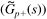

| 1: | Consider Example 14.2, the quadruple tank problem.
Find the RGA for each operating point. Which variable pairing do you recommend for each operating point? Consider the nonminimum-phase (RHP transmission zeros) operating point (operating point 2) in Example 14.2. Design independent single-loop controllers for relatively fast closed-loop responses. (Hint: Approximate the transfer functions as first order and use PI tuning rules.) Then close both loops simultaneously using the independent SISO tuning. What do you find? How much detuning is necessary to obtain good performance with both loops closed?
|
| 2: | Find the inverse of the process transfer function matrix for system B in Example 14.1. |
| 3: | Consider the mixing tank presented in Example 14.3.
Write the dynamic material and energy balances for this system. The material balance will yield the rate of change of height with respect to time, and the energy balance will yield the rate of change of temperature with respect to time. Linearize the model at the steady state to develop the input-output transfer function matrix. |
| 4: | Perform simulations on the mixing tank shown in Example 14.3.
First, work with the scaled transfer function matrix and make step input changes in both the strongest and weakest directions. Compare the magnitudes of the output responses. Now, work with the dimensional variables. Convert the strongest and weakest input directions to dimensional inputs and compare the effect of step changes on the dimensional outputs.
|
| 5: | Consider Example 14.1, controlled using the multivariable IMC procedure. Use the SIMULINK diagram and LTI objects shown in Section 14.8.3 to perform simulations for various tuning parameter (l1 and l2 values). Show that decreasing the tuning parameter values below 0.333 does not significantly speed up the response but does increase the manipulated input action. |
| 6: | Consider Example 14.1, controlled using the multivariable IMC procedure. Use the SIMULINK diagram and LTI objects shown in Section 14.8. but revise these for the minimum-phase (system B) operating point. Since there is not a RHP transmission zero, no factorization of the process transfer function is necessary. Perform simulations for various tuning parameter (l1 and l2) values. Show that decreasing the tuning parameter values to approach 0 leads to almost instantaneous control, at the expense of large manipulated variable action. |
| 7: | Consider Example 14.2 (quadruple tank problem). The modeling equations are presented in the appendix. Verify that the given steady-state values are correct for each operating point. Also, linearize and find the state space model and verify the transfer function matrix that was given for each operating point in Example 14.2. |
| 8: | Consider Example 14.2 (quadruple tank problem). Use MATLAB to calculate the transmission zeros for both operating points. |
| 9: | Consider Example 14.2 (quadruple tank problem). Design a multivariable IMC controller for the second (nonminimum phase) operating point. Use the standard factorization that places the RHP transmission zero on the diagonal terms of the "bad stuff" () matrix. Implement the closed-loop controller in SIMULINK and discuss the effect of the IMC filter factors on setpoint changes in each output (at different times). Consider the allowable changes in the process outputs and manipulated inputs, given the steady-state data shown in the appendix. |
| 10: | Consider Example 14.3 (mixing tank) with the transfer function matrix shown in Equation (14.11). Implement the simplified decoupling strategy. Compare this with static decoupling. Discuss the effect of controller tuning. For setpoint changes of a reasonable magnitude, make certain that the manipulated input ranges are feasible. |
| 11: | Consider a process ("the shower problem") where a cold water stream at 15°C is mixed with a hot water stream of 50°C. The outputs are the total mixed stream flow rate and temperature. Assume steady-state flow rates of 0.19 and 0.13 liters/sec for the cold and hot streams respectively. The steady-state outputs are then 0.32 liters/sec and 29°C. Scale the inputs and outputs to cover appropriate ranges, find the scaled gain matrix and perform an SVD analysis. What is the condition number? What are the most sensitive input and output directions (provide a physical interpretation of this result)? For a rectangular input space where the cold water flow can range from 0 to 0.25 liters/second and the hot water flow can range from 0 to 0.19 liters/sec, construct the output operating window. Given those input flow limits, is it possible to operate over a mixed stream flow rate of 0.19 to 0.44 liters/sec, with a mixed stream temperature between 23 and 34°C? |